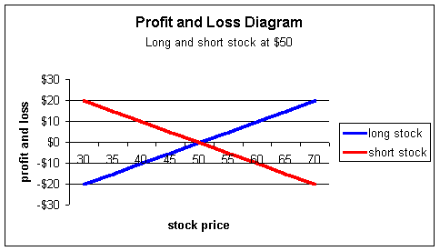
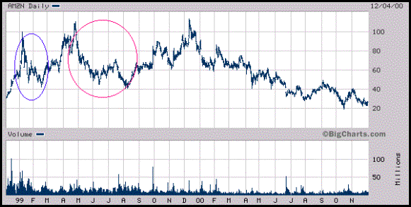
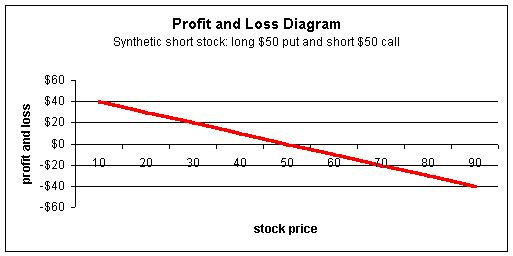
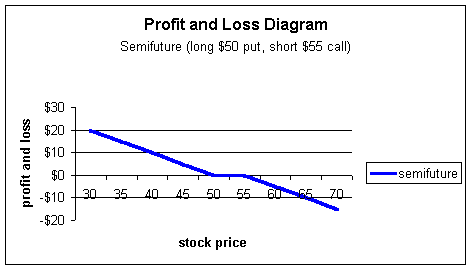
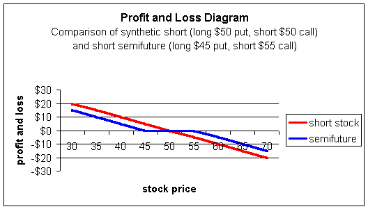

If you read the section on synthetics, you should have a handle on how they work. Now we'll show you how powerful they can be.
Before we talk about synthetic short stock, let's go through the basic short sale.
A popular strategy among bearish investors is shorting stock. When you short stock, you are selling it first and then buying it back later at hopefully a lower price. Short sellers are attempting to sell high and buy low -- just in the reverse order of bullish investors.
In order to sell stock you don't own, you must borrow it from another investor. While this may sound complicated, it is a seamless transaction and usually takes a matter of seconds to execute.
Notice how the short stock position is exactly opposite the long position:
This means the investor who is short stock has unlimited upside liability. As the stock moves higher, the short position increases its losses.
There is one catch with selling stock short; the sale must be done on an uptick or a zero-plus tick. What is an uptick? Say a stock is quoted bid $25 and offered at $25-1/2 with the last trade at $25. If the next trade is higher than the last trade of $25, that new trade is an uptick. If the trade is lower, it is a downtick.
When you look at the last trade of a stock, you will usually see a "+" or "-" sign to the side (or on some systems, an up or down arrow). The "+" indicates and uptick and the "-" a downtick. Using the above example, if the next trade is $25-1/4, you will see the last trade reported as +$25-1/4. If the following trade is back to $25, you will see -$25.
If the next trade is $25-1/4, again, you will see +$25. What if the following trade is also $25- 1/4? That is called a zero-plus tick indicating that the last change was an uptick but the recent prices are unchanged.
The uptick rule was created to prevent investors from selling into a sharp downtrend, thereby nearly guaranteeing a profit. The rule is of little significance to the investor other than it must be met. There is nothing the trader needs to do other than place the order -- either it will fill or it won't.
Because of the uptick rule, it is possible for a short sale to not execute even if it is a market order!
We've seen there are two main obstacles to overcome when shorting stock: shares must be located to be borrowed and the sale must occur on an uptick.
Although it is fairly uncommon, it is possible for shares to not be available for shorting. Around April of 1999, there was a four-month period where Amazon.com (AMZN) was starting to fall after being on a record climb to the upside (shown in red circle below). Prior to that, investors saw it fall from nearly $100 to just above $40 (blue circle). So once it started falling again in late April, investors were eager to sell it short hoping it would fall back to $40.
But many investors were unable to capitalize on the situation, as there was a two-week period or so where no shares were available to short!
Most investors would let the situation pass as an unfortunate market technicality, and miss out on a potentially terrific trading opportunity.
But if these same investors understood synthetic options, they would have participated fully on the short side. Better yet, they would avoid the uptick rule.
If you read our section on synthetics, you will recall the equation for synthetic options is Stock + Put - Call = ? Because we want to find out the synthetic equivalent of short stock, we need to get short stock (minus stock) by itself in the equation. If we subtract stock from both sides, we get Put - Call = - Stock and there's the answer: Long put + short call = short stock.
Basically what investors are doing with synthetic short sales is buying puts, and that gives them the right to sell the stock so, will appreciate as the stock falls -- just like a short stock position. However, puts can be very expensive especially under the conditions in the chart above. So in order to pay for the puts, investors will sell calls and use the proceeds to buy the puts. If the stock is trading for $100, the trader should theoretically receive a credit from the trade. But due to bid-ask spread and commissions, the synthetic short sale will usually result in a slight debit.
From a profit and loss standpoint, the synthetic short position looks like this:
We can see that is looks exactly like our short stock position shown earlier; at expiration, the investor gains point-for-point if the stock falls, and loses point-for-point if it rises. The synthetic position, at expiration, is behaving exactly like short stock.
It is important to remember that options do not behave like stock until expiration unless they are very deep-in-the-money. So if a trader executes a synthetic short at a strike of $100, the profit and loss diagram will not have the above shape until expiration. If a trader wishes to have the options behave more like stock, he should consider buying an in-the-money put and selling and in-the-money call.
What's great about the synthetic short is that it does not need an uptick to execute. You simply place your order to buy the put and sell the call. Of course, it is usually suggested these two trades be placed simultaneously to prevent execution or risk -- the risk of an unfavorable market move while you are executing two separate orders.
Bear in mind that the short call position is naked. This means you will generally need level-3 option approval and, in addition, will have an option requirement in order to hold the naked call position. Be sure to check with your broker if you are unsure as to how that works. The requirement is not a huge offset for the synthetic position compared to short stock; the short stock position will be charged with a 50% Reg T requirement, which is not applicable to the synthetic.
There is an interesting strategy known as a "bullet" where investors can actually intensify the fall of a stock and increase the odds that they will make money. Here's how it works, Say a stock is in a rapid decline. You'd like to short it, but you're concerned there may not be an uptick. However, if you buy a put, the market maker will be forced to short the stock and buy a call to create the long put position for you. Market makers are not subject to the uptick rule; they can just hit the bid and execute a short sale.
One strategy is to buy deep-in-the-money puts, which force market makers to hedge nearly dollar-for-dollar and short an equal number of shares. For example, say a stock is trading for $100 and falling sharply. If you buy a deep-in-the-money put such as a $130 (or wherever delta is near 1), the market maker will sell nearly 100 shares for each put, thereby putting more downward pressure on the underlying. Because you hold a deep-in-the-money put, it will appreciate nearly dollar-for-dollar with each point fall in the underlying.
To exacerbate the fall further, you can enter the deep-in-the-money synthetic short position by selling the calls, too. Now the market maker will be forced to short the stock again nearly point-for-point. So if you buy 10 puts and sell 10 calls (both deep-in-the-money), the market maker will be forced to short nearly 2,000 shares without an uptick.
There is a related strategy that has a little less risk called a semifuture. The strategy can be used as a long or short position. If you want a synthetic short position with a little less risk, you can split the strike prices, such as buy the $50 put and sell the $55 call. The more distance you put between the strikes the less upside risk there is. From a profit and loss standpoint, the short semifuture position looks like this:
You can see that the flat area between $50 and $55 creates less risk to the upside. In other words, with synthetic stock at $50, the trader is exposed to losses for any stock price above $50. With the semifuture, the trader is not exposed to losses until the stock is above $55.
The semifuture strategy can be split further. For example, the trader may buy the $45 put and sell the $55 call. Now there will be less risk to the upside, but also less profit to the downside as shown in the following chart:
Market downturns can be fast and furious, which is what attracts speculators to short sales. Many investors recognize potential situations, but are unable to capitalize on them due to market restrictions. If you understand synthetics, you can overcome many restrictions and profit from your outlook on the market.